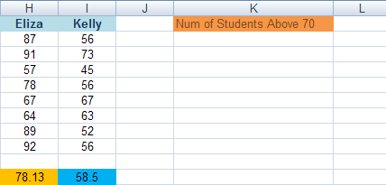
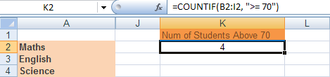
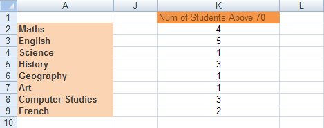
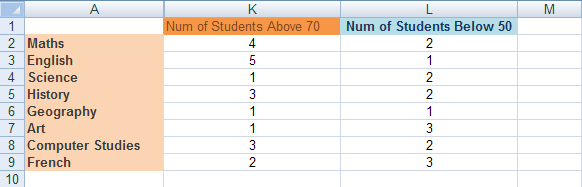

Free
computer Tutorials
|
Free
computer Tutorials
|
|
 HOME HOME
|
|
||||
Microsoft Excel 2007 to 2010CountIF in ExcelAnother useful function that uses Conditional Logic is CountIF. This one is fairly straightforward. As its name suggests, it counts things! But it counts things IF a condition is met. For example, keep a count of how many students have an A Grade.
To get you started with this function, we'll use our Student
Grade spreadsheet and count how many students have a score of 70
or above. First, add the following label to your spreadsheet:  As you can see, we've put our new label at the start of the K column. We can now use the CountIF function to see how many of the students scored 70 or above for a given subject. The CountIF function looks like this: COUNTIF(range, criteria) The function takes two arguments (the words in the round brackets). The first argument is range, and this means the range of cells you want Excel to count. Criteria means, "What do you want Excel to look for when it's counting?". So click inside cell K2, and then click inside the formula bar at the top. Enter the following formula: =CountIf(B2:I2, ">= 70") The cells B2 to I2 contain the Math scores for all 8 students. It's these scores we want to count. Press the enter key on your keyboard. Excel should give you an answer of 4:  (If you're wondering where the columns B to I have gone in the image above, we've hidden then for convenience sake!) To do the rest of the scores, you can use AutoFill. You should then have a K column that looks like this:  By using CountIF, we can see at a glance which subjects students are doing well in, and which subjects they are struggling in.
Exercise Add a new label to the L column. In the cells L2 to L9, work out how
many students got below 50 for a given subject. You should get the same
results as in the image below: 
In the next part, we'll look at a function similar to CountIF - SumIF. |
|||||
|